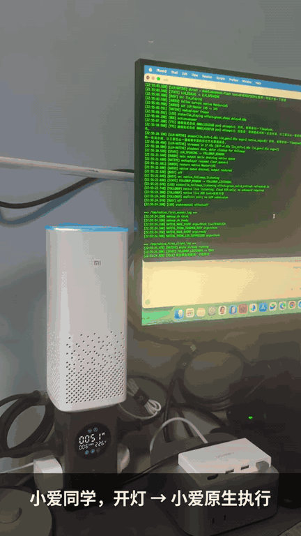

小爱音箱接入 DeepSeek / 大模型
这是跑在小米 AI 音箱 MDZ-25-DA（系统代号 S12A）上的客户端：开灯、天气等小爱能处理的仍走小爱，开放问题由音箱直连云端大模型，再用在线 EdgeTTS 念出来。大模型不在音箱上运行，断网后不能靠它继续对话。
A client on the tested Xiaomi AI Speaker MDZ-25-DA (S12A). Native XiaoAI keeps lights, weather and similar commands. Open questions go to a cloud LLM the speaker calls directly, then online EdgeTTS. The model does not run on the speaker, and it does not work offline. This is not an official Xiaomi product.
几项可以核对的事实
| 项 | 仓库里的事实 |
|---|---|
| 实测型号 | 只有 MDZ-25-DA / S12A |
| 是否离线 | 否。识别、大模型和 EdgeTTS 都在云端；音箱上是客户端 |
| 是否要电脑一直开着 | 音箱直连模型且 TTS_ENGINE=device 时不需要。示例配置默认 TTS_ENGINE=server，保持默认则 TTS 服务要在线 |
| 支持的模型 | DeepSeek（默认 deepseek-flash）、GLM、Kimi、MiniMax，或其他 OpenAI 兼容接口 |
| 许可证 | 本仓库自有代码 MIT。不是小米官方产品 |
同一台音箱上的一段演示
先让小爱开灯，再问 DeepSeek，回答结束后不喊唤醒词继续追问。免唤醒追问需要另行安装组件。图不附带速度或延迟数字。

它怎么工作
- 唤醒小爱。语音识别仍走小米云。
- 音箱上的客户端决定这句话交给小爱，还是转给大模型。
- 转给大模型时，默认由音箱直接调用你配置的云 API。DeepSeek 这条主线还可以先判断要不要联网搜索。
- 回答用 EdgeTTS 播出来；合成失败时可以退回小爱自己的语音。
- 安装并启用追问组件后，绿灯亮着可以接着说。不说话就会结束。五句口头结束语默认关闭。
更细的过程在仓库里的 一次对话的完整过程。
支持型号
只实测过小米 AI 音箱 MDZ-25-DA，系统代号 S12A。其他型号没有测过，命令不能照搬。
安装要做什么
要拆机，不用焊接。主板上有现成串口，用 USB-TTL 和杜邦线接上。打通 SSH 时可能改写系统分区，写错可能无法启动。已经能 SSH 的设备不必再写一遍分区。
常见问题
- 支持哪些型号？
- 要不要焊接，要不要刷机？
- 是不是在音箱上跑大模型？能离线吗？
- 需要电脑或 NAS 一直开着吗？
- 开灯、天气这些原来的功能还能用吗？
- 支持哪些大模型？怎么切换？能联网搜索吗？
- 能免唤醒连续追问吗？怎么结束？
- 和 mi-gpt、open-xiaoai 有什么不同？
- 费用怎么算？
- 有什么风险？用的是什么许可证？
完整回答在 常见问题，仓库原文是 docs/faq.md。英文：English FAQ。